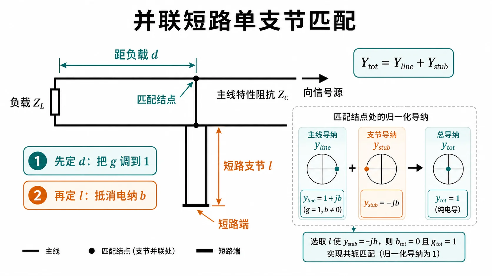
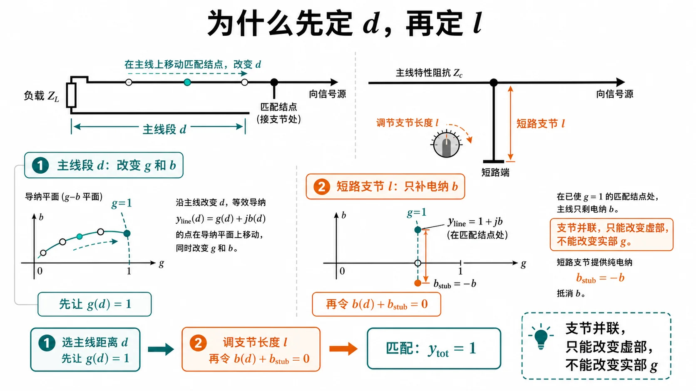
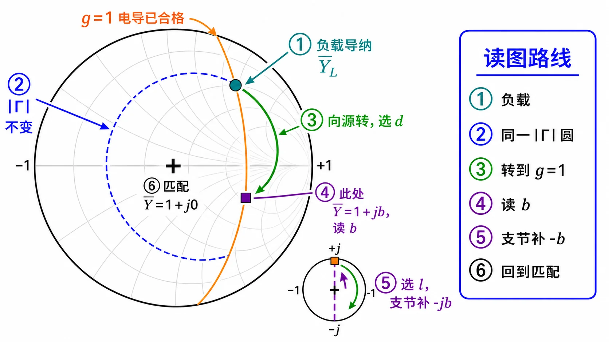

第二次作业 · Lec08–09§
导航： 总目录 · 符号与导读 · Lec06 · Lec07 · Lec08–09 · 1 · 2 · 3 · 4 · 5 · 6 · 7 · 附录
Lec08–09 作业§
阅读建议： 请按顺序 ① 本讲导读（下面） → ②「导纳匹配与 $g=1$ 圆（零基础）」 → ③ 各题单题分册。解法一 用公式算数为主；解法二 用 Smith 圆图对照。圆图、$|\Gamma|$、$\rho$ 若生疏，先看 Lec07 分册；$z$ 方向与 向源 = 顺时针 见 符号与导读。
本讲导读（Lec08–09 在学什么）§
本讲一句话
馈线有设计好的 特性阻抗 $Z_c$。负载若和这根线 不「合拍」，线上会有 反射（一部分能量被弹回）。本讲要学的是：常常 不换负载，而在 某一个位置 加元件——例如 并联一根短路线，或 插入一段 $\lambda/4$ 线——把反射 压下去，让主线更接近「合拍」（工程上叫 匹配）。这和低频电路里用 L、C 调谐 是同类想法，只是这里用的是 分布参数 传输线模型。
和 Lec06、Lec07 有什么不一样
- Lec06、Lec07：重点是 顺着线走，看 阻抗沿线怎么变；若学了 Lec07，还会用 Smith 圆图读 反射强弱、线长——核心是 「状态怎么变」。
- Lec08–09：重点是 在某个接头/截面上动手，用支节、变换段 改电路，让从该点向电源方向看进去 更接近理想——核心是 「怎么调到合拍」。
- 上两行里的「反射」在量上常对应 $|\Gamma|$、驻波比 $\rho$（Lec06–07 已练过）；本讲不再从头讲它们，忘了可回看 Lec06、Lec07。
本讲里会出现的结构（先记白话）
| 名称 | 白话在干什么 |
|---|---|
| 主传输线 | 信号从源到负载的那根 $Z_c$ 线，匹配对象通常是它。 |
| 并联短路线（单支节） | 在主线上某点 并接 一根到地的短路线，用枝节长度提供 可调电抗，配合主线某段长度一起 消反射。 |
| $\lambda/4$ 变换段 | 一段 四分之一波长 线；在 纯电阻 截面上接时，能把电阻 变成另一个电阻，便于接到 $Z_c$。 |
| 双支节（两处并联枝节） | 两个并联枝节 + 中间固定线长，调节更灵活，但有些负载 根本配不平（盲区）。 |
题型地图：每道题大概干什么
- 第 1 题：把「单支节并联匹配」要满足的方程 推导出来——这是 第 4、5 题算数时用的同一套套路的源头。（并联单支节解析母题）→ 第 1 题
- 第 2 题：给一条具体长线，算 驻波比、负载反射强弱、始端输入阻抗；再问 $\lambda/4$ 变换器 应接在距负载多远、变换段 特性阻抗 $Z_{0T}$ 多大。（先找沿线纯电阻位置，再接 $\lambda/4$）→ 第 2 题
- 第 3 题：终端本来 已匹配，中间某处又 并联 了一个阻抗，求另一位置的 输入阻抗——练 分段计算；并联处用 导纳 列式往往最省事。（分段 + 并联导纳）→ 第 3 题
- 第 4、5 题：给定负载，用 单支节 求距离 $d$ 与枝节长 $l$ 的 数值；圆图上对应 $g=1$ 轨迹 与 外圆枝节。（单支节匹配计算）→ 第 4 题、第 5 题
- 第 6 题：两处都是 并联 短路线，$d_1$、$d_2$ 题目给定，求 $l_1$、$l_2$；比单支节多一个自由度，但有 盲区。（双并联支节）→ 第 6 题
- 第 7 题：一处 并联 枝节、另一处与主线 串联——并联只按导纳加，串联只按阻抗加，和「两并联」的 第 6 题列式不同，不能混抄。（并 + 串混合拓扑）→ 第 7 题
题目之间的关系（为啥要一起看）
- 第 1 题 → 第 4、5 题：第 1 题写 条件，第 4、5 题用 同一套并联匹配思路 代数字。
- 第 2 题：也是「先让某一截面满足某种简单性质（这里是 阻抗变纯实），再接下一段器件」，但具体公式是 $\lambda/4$ 变换器 那一套，不要硬套单支节那组式子。
- 第 3 题：单独练 线上分段 与 并联 怎么接公式。
- 第 6 题 与 第 7 题：都是 多个可调件，但 接法不同 → 方程不同；第 7 题尤其不要把 并联枝节的导纳式 写到 串联枝节 上去。
你该怎么读（接下来看什么）
- 若 导纳 $Y$、电导、电纳 还不熟：请接着读下面 「导纳匹配与 $g=1$ 圆（零基础）」——导读只建立 动机和路线图，具体 并联为什么要先算 $d$ 再算 $l$、圆图上 橙线是什么，都在那一节展开。
- 再按各题 解法一 把数算稳，用 解法二 在圆图上 走一遍波长，印象会更牢。
图解辅读（自学用示意图组）§
以下插图为 概念示意，与上节「为什么要先 $d$ 后 $l$」、第 4 题圆图步骤、两组 $(d,l)$ 以及第 7 题 并 / 串 拓扑对照阅读；具体数值 仍以各题 解法一 为准。

图 1：电路长什么样——在距负载 $d$ 处 并接 短路枝节 $l$；调节 $d,l$ 使向源看入接近 $Z_c$。

图 2：物理顺序——并联短路线只提供 纯电纳，结点处 只能加减电纳；须先用主线长度 $d$ 使 $\mathrm{Re}\,Y=Y_c$（归一化即 $g=1$），再用 $l$ 把 总电纳 调到零。

图 3：圆图上手指怎么走——与 第 4 题、第 5 题「解法二」同一套路。

图 4：为何多解——同一负载圆与 $g=1$ 轨迹可相交 两次，工程上常取 距负载较近 的 $d$；加 $\lambda/2$ 周期仍有等价写法。

图 5：并 vs 串——并联结点用 导纳相加；串联截面用 阻抗相加，列式与 第 6 题 不同。
导纳匹配与 $g=1$ 圆（零基础）§
（接在导读后） 上面只建立了「要匹配、支节在干什么」；从本节起引入 导纳 $\bar Y=g+\mathrm{j}b$ 与 $g=1$，专门用来描述 并联结点 上的加减，并和 Smith 图上的 橙色轨迹 一一对应。
定义 归一化导纳 $\bar Y=Y/Y_c=g+\mathrm{j}b$（$g$、$b$ 无量纲）。匹配到馈线 $Z_c$ 时，希望结点 $\bar Y_{\mathrm{tot}}=1+\mathrm{j}0$，即 $g=1$ 且 $b=0$。
为什么单支节要先选 $d$ 再选 $l$？ 长度 $d$ 的主线段使 $Y(d)$ 的实部、虚部都随 $d$ 变。并联短路枝节 只提供 纯电纳 $Y_{\mathrm{stub}}$（实部为 0），在结点上 只能改总电纳、不能改总电导。因此必须先用 某个 $d$ 使 $\mathrm{Re}\,Y(d)=Y_c$（写成归一化即 $\mathrm{Re}\,\bar Y=1$，即落在 $g=1$ 上），再用 枝节长度 $l$ 把 总虚部 调到零。这就是 第 1 题 里 先 $G=Y_c$ 再消 $B$ 的物理版叙述。
圆图上怎么看：在 $\Gamma$ 平面 上，$\mathrm{Re}\,\bar Y=1$ 是一条固定轨迹（本讲义配图用 橙色曲线 画出，即 $g=1$ 圆/线）。从 $\bar Y_L$（或由 $\bar Z_L$ 取倒数）对应点出发，沿 等 $|\Gamma|$ 圆 向源顺时针 转，与 $g=1$ 的交点定 $d/\lambda$；在该交点读 $b$，从 最外圆上的短路点 沿外圆走枝节，提供 $-b$，得 $l/\lambda$。阻抗 Smith 图 与 导纳 Smith 图 在 $\Gamma$ 平面上可通过对 $\bar Z\leftrightarrow\bar Y$ 互换理解；并联结点列式时 导纳相加 最直接。

图：橙色为 $g=1$ 轨迹；匹配 $\bar Y=1$ 须同时 $g=1$ 且 $b=0$。单支节读图按编号走：先定负载导纳，沿同一 $|\Gamma|$ 圆向源转到 $g=1$，在交点读 $b$，再用短路支节补 $-b$。若你只看本图仍不知从何转起，请接着看 第 1 题 的编号说明。
各题索引（单题分册）§
| 题号 | 文档 | 结论速览 |
|---|---|---|
| 1 | 第 1 题 | 并联单支节：$Y(d)+Y_{\mathrm{stub}}=Y_c$；先 $\mathrm{Re}\,Y=Y_c$ 定 $d$，再 $\tan\beta l=Y_c/B$ 定 $l$；Smith：$g=1$ + 外圆。 |
| 2 | 第 2 题 | $\rho\approx27.6$，$Z_{\mathrm{in}}$ 量级 $(133.5-\mathrm{j}1354.9)\,\Omega$；$\lambda/4$ 变换器 $d\approx0.0262\,\mathrm{m}$，$Z_{0T}\approx114.2\,\Omega$。 |
| 3 | 第 3 题 | 匹配线上并联后：$Z_{\mathrm{in}}=(100+\mathrm{j}100)\,\Omega$。 |
| 4 | 第 4 题 | $d=\lambda/8$、$l=\lambda/8$（一组）；或 $d\approx0.301\lambda$、$l=3\lambda/8$。 |
| 5 | 第 5 题 | $d\approx0.0806\lambda$、$l\approx0.419\lambda$（一组）；另一组 $d\approx0.4468\lambda$、$l\approx0.0811\lambda$。 |
| 6 | 第 6 题 | $l_1\approx0.194\lambda$、$l_2\approx0.114\lambda$（一组）；或 $0.452\lambda$、$0.474\lambda$。 |
| 7 | 第 7 题 | 并+串：约 $(0.391\lambda,0.211\lambda)$ 或 $(0.257\lambda,0.323\lambda)$。 |
本讲收尾：还可怎么自查？§
- 并联枝节：是否能一句话说清 先 $d$ 后 $l$（枝节只改电纳，先要把电导旋到 $Y_c$）？
- $\lambda/4$ 变换器：是否记得 必须先在纯阻截面 接入，且 $Z_{0T}=\sqrt{Z_c R}$ 与 波腹/波节 两种电阻对应两种实现难度？
- 并联负载分段：是否 先 $Y$ 相加 再向源走线长？
- 第 4、5 题：$\mathrm{Re}\,\bar Y(d)=1$ 是否既能 画圆图 又能 化二次方程？
- 第 6 与第 7 题：能否在草稿纸上各画 一张草图，标出 两处结点 是 并 还是 串，避免公式混用？